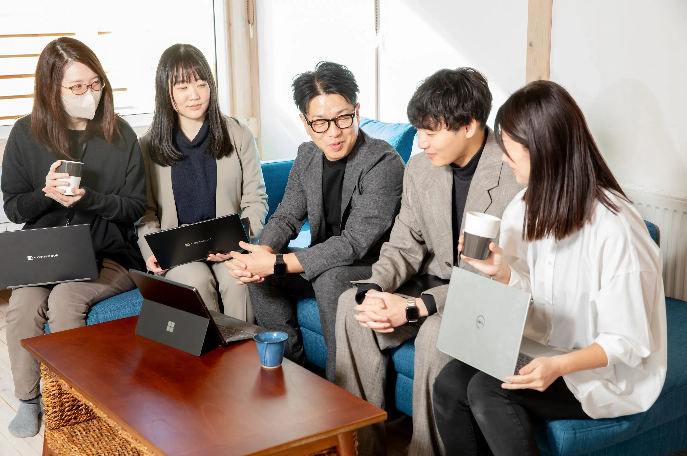

税理士補助
経験者採用 / 正社員
リモート / 出社のハイブリッド
週2回程度出社
複数の顧問先を担当し、クラウド会計を活用して月次・年次決算を支援します。打合せは原則オンラインです。
詳細を見る →採用サイト
クラウド会計とリモートワークで、“誠実”を自由に。
少人数だからこそ、働き方も、
関わり方も柔軟に。
クラウドとリモートを活用した
事務所です。
この文章はダミーです。文字の大きさ、量、字間、行間等を確認するために入れています。
この文章はダミーです。文字の大きさ、量、字間、行間等を確認するために入れています。
この文章はダミーです。文字の大きさ、量、字間、行間等を確認するために入れています。
この文章はダミーです。文字の大きさ、量、字間、行間等を確認するために入れています。

この文章はダミーです。文字の大きさ、量、字間、行間等を確認するために入れています。
クラウド会計で情報共有を一元化。
在宅でも出社でも、距離を感じずに働けます

業務に合わせて、
生活に合わせて。
集中できるリズムを大切にしています
急な予定変更にも柔軟に対応。
仕事と生活、どちらも無理をしません
年齢やキャリアに関係なく、
成果と姿勢をフェアに評価します
税務にとどまらず、
経営に寄り添う仕事を大切にしています
Story
どこにいても、同じ目的でつながれるチーム。
それぞれのリズムで働きながら、
“数字の先”を支える想いはひとつです。
01
西巻 | 税務コンサルタント（正社員）
西巻
02

中村 | 税理士補助（パート）
中村